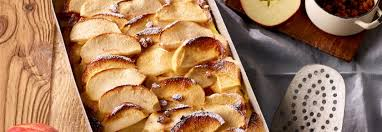

Home
Scheiterhaufen

Beschreibung
Scheiterhaufen ist eine in Altbayern, Österreich, Tschechien (als
žemlovka), der Slowakei (als žemľovka) und Slowenien (als žemljin
narastek) verbreitete Mehlspeise. Im Südwesten Deutschlands gibt es die
verwandte Speise Ofenschlupfer.
Es wird mit Semmeln, Äpfeln, Rosinen und Zimt gebacken und ist eine gute
Möglichkeit altbackene Semmeln, Milchstriezel oder Briochkipferln zu
verwerten. So köstlich kann Resteverwertung sein.
Zutaten
- 250 g trockene Brötchen
- 500 ml Milch
- 1 Pck. Vanillezucker
- 3EL Rosinen
- 5 mittelgroße Äpfel
- 1/2 TL Zimt
- 80 g Zucker
- 4 Eier
- 1 Prise Salz
- 80 g Mandelblättchen
- 4o g Puderzucker
Zubereitung
-
Die Brötchen in dünne Scheiben schneiden. Die Milch mit dem
Vanillezucker leicht erwärmen und über die Brötchen gießen. Die Brötchen
ca. 10 Minuten einweichen lassen.
-
Die Äpfel schälen, entkernen und mit einem Hobel in dünne Scheiben
schneiden. Die Apfelscheiben mit Zimt und der Hälfte des Zuckers
vermengen.
-
Die Eier mit der anderen Hälfte des Zuckers und der Prise Salz mit einem
Schneebesen verrühren. Eigemisch mit den eingeweichten Brötchen
vermengen.
-
Den Backofen auf 180 Grad Umluft (200 Grad Ober- und Unterhitze)
vorheizen. Die mittelgroße Auflaufform mit etwas flüssiger Butter
auspinseln und abwechselnd Brötchenmasse und Äpfel einschichten. Auf
jede Apfelschicht die Rosinen verteilen.
-
Am Schluss den Auflauf mit Mandelblättchen bestreuen. Den Auflauf im
Backofen für ca. 30 Minuten goldgelb backen und anschließend mit
Puderzucker bestreuen. Guten Appetit!